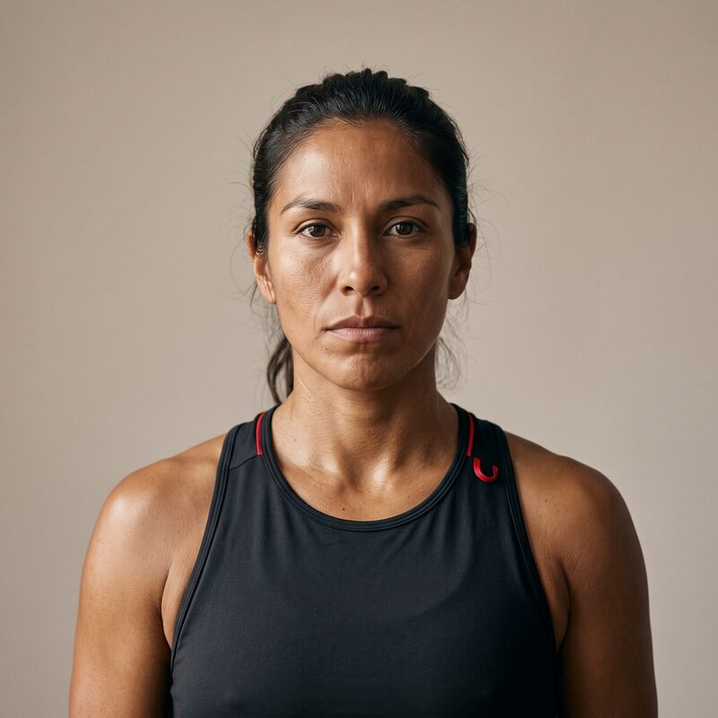

Una aplicación web que te guía, paso a paso, para descubrir y construir el arquetipo de marca de tu proyecto o emprendimiento: un test basado en los dos ejes motivacionales de Mark & Pearson, un resultado con recomendaciones accionables de marketing, y un entregable que puedes descargar.

Un arquetipo de marca es un patrón de significado reconocible —el Héroe, el Sabio, el Forajido— que le da a una marca una voz coherente y una razón para importarle a alguien. La idea de arquetipo viene de Carl Jung, pero el sistema de doce es de Carol Pearson, y su traslado al branding es de Margaret Mark y la propia Pearson en The Hero and the Outlaw (2001). Esa distinción importa más de lo que parece: la explicamos aquí abajo.
Esta es la confusión más frecuente. Al cliente se le entiende con otras herramientas (buyer persona, mapa de empatía). El arquetipo define quién es la marca: cómo habla, qué promete, qué nunca haría.
El resultado no se queda en "eres el Héroe". Entrega deseo central, estrategia de branding, tono de voz, paleta de color, categorías donde ese arquetipo funciona y una marca real de referencia para discutir en clase.
Un asistente guiado, al estilo de los generadores de buyer persona, pero que en vez de describir a un cliente genérico produce la personalidad de tu marca.
Qué es un arquetipo de marca, la distinción marca vs. cliente y el modelo de los dos ejes.
Nombre, qué hace, a quién le vende, qué la hace distinta. Ancla el test en un caso concreto.
14 escenarios sobre cómo actúa tu marca. Un mapa en vivo muestra hacia dónde se mueve.
Arquetipo primario y secundario con % de afinidad, ficha completa y el arquetipo opuesto.
Escribes tres mensajes y un tagline en tu tono, y descargas PNG, PDF y story vertical.
El test no adivina: ubica a tu marca en un modelo explícito. Mark y Pearson condensan la teoría motivacional en cuatro impulsos humanos dispuestos en dos ejes —pertenencia frente a independencia, y estabilidad frente a riesgo—. De ahí salen cuatro cuadrantes, con tres arquetipos cada uno.
"Motivational theory can be condensed into a focus on four major human drives positioned along
two axes: Belonging/People versus Independence/Self-Actualization, and Stability/Control versus
Risk/Mastery."
— Mark & Pearson (2001), p. 14
Cada alternativa del test suma o resta en uno de esos dos ejes. La posición final determina el cuadrante, y dentro del cuadrante se ordenan los tres arquetipos. Es un modelo transparente y discutible: puedes abrir el código y ver el peso de cada respuesta.
Es probablemente el error más repetido en los libros, cursos y artículos de branding. Carl Jung nunca propuso una lista de doce arquetipos. Al contrario: sostuvo explícitamente que son innumerables, porque emergen de la repetición de la experiencia humana, no de una taxonomía.
Jung describió patrones como la persona, la sombra, el ánima/ánimus, el sí-mismo, la madre, el niño o el trickster — no el Héroe, el Mago y el Gobernante como sistema cerrado de doce. La lista de doce es posterior y tiene autora: Carol S. Pearson, que la desarrolló para el desarrollo personal y organizacional, y que años después la llevó al branding junto a Margaret Mark.
Formula la teoría del inconsciente colectivo y los arquetipos. Sin lista cerrada ni aplicación comercial.
The Hero Within (6 arquetipos) y Awakening the Heroes Within (12). Aquí nacen los doce, para desarrollo personal.
The Hero and the Outlaw traslada los doce a la gestión de marca y agrega los dos ejes motivacionales.
Por qué importa en clase: llamarlos "junguianos" les presta una autoridad fundacional que no tienen y desalienta la crítica. Decir con precisión de dónde vienen —una sistematización moderna, útil y discutible, inspirada en Jung— es parte de usarlos bien.
Es una de las conversaciones más productivas que se pueden abrir con este marco, y una de las más fáciles de hacer mal. Conviene separar tres cosas que suelen mezclarse.
Mark y Pearson dedican una sección a lo que llaman la esencia de género de la categoría: ciertos productos cargan una energía masculina o femenina que condiciona qué arquetipos les calzan. Su ejemplo: los snacks salados —angulosos, crujientes, ruidosos, de consumo desinhibido— se leen como masculinos y admiten Forajido, Explorador o Bufón; el helado se lee como femenino y admite Amante, Inocente o Cuidador. El libro advierte de inmediato contra la lectura literal:
La distinción es fina y en la práctica se pierde: en manos poco cuidadosas, "energía femenina" termina siendo "para mujeres", y el marco pasa de describir marcas a reproducir estereotipos.
El propio listado lo arrastra. En inglés, el arquetipo de la pertenencia se llama Regular Guy/Gal — y en español lo traducimos "Hombre común", perdiendo la mitad. El Gobernante, el Héroe y el Sabio se leen por defecto en masculino; el Cuidador y el Amante, en femenino. Ninguna de esas asociaciones está en la teoría: están en el idioma y en la iconografía publicitaria que hemos visto toda la vida. Vale la pena preguntar en clase: ¿por qué imaginaste hombre al Héroe?
El libro trabaja con un género binario y con roles sociales que han cambiado mucho en veinticinco años. Sus propios autores ya apuntaban hacia la androginia — señalan que el Cuidador solo funciona hoy si su expresión es "androgynous and self-actualized" (p. 226) y observan que Starbucks debe parte de su fuerza a un carácter deliberadamente andrógino, nombre masculino y logo de sirena (pp. 74–75). Muchas de las marcas más potentes de la última década se construyeron justamente cruzando esa línea.
Cómo lo usamos: el género de categoría se trata como una convención cultural heredada que conviene conocer para decidir si se acompaña o se rompe deliberadamente. Romperla suele ser la jugada de diferenciación más barata que tiene una marca. La app no asigna género a ningún arquetipo ni condiciona el resultado por él.
Los alumnos entienden los arquetipos cuando se los explican. Les cuesta mucho más aplicarlos a una marca concreta. Esta app existe para cerrar esa brecha.
Obliga a tomar postura sobre una marca propia: 14 decisiones concretas, no un resumen leído. El aprendizaje ocurre al elegir, no al escuchar.
El mapa en vivo muestra el marco teórico operando mientras se responde. El alumno ve por qué llegó a su resultado, en vez de recibir un veredicto de caja negra.
Cada alumno produce mensajes y un tagline propios, y descarga una ficha evaluable. Aplicar el tono es lo que demuestra comprensión, no acertar el arquetipo.
Los resultados se comparan y se defienden. Los desacuerdos —"esa marca no es Sabio, es Gobernante"— son el momento más productivo de la sesión.
La capa lúdica (progreso, reveal, carta) sigue la lógica de la gamificación (Deterding et al., 2011) y de la teoría de la autodeterminación (Ryan & Deci, 2000): autonomía, competencia y relación.
El "arquetipo opuesto" y el secundario muestran que la identidad de marca es una posición relativa dentro de un sistema, no una etiqueta aislada.
La app es una single page application estática: un único archivo HTML autocontenido con React cargado por CDN. Todo ocurre en el navegador del alumno y termina en una descarga. No hay backend, no hay base de datos y no se recoge ningún dato personal.
Esa decisión no es solo técnica: como no hay servidor que saturar ni costo por usuario, da lo mismo que la usen 10 o 10.000 alumnos. Se abre con doble clic, se sube al LMS o se publica en cualquier hosting estático gratuito.
El contenido se construyó en dos capas: el rigor conceptual viene del libro de Mark & Pearson —los mottos están verificados página por página contra el original— y la capa ejecutable de marketing (deseo central, estrategia de branding, tono, industrias, marca de referencia) proviene de la sistematización de Iconic Fox, citada como tal.
| Arquitectura | SPA estática en un archivo — gratis, portable, fácil de iterar. |
| Mecánica | Test sobre los dos ejes del libro, no selección libre de arquetipo — es defendible académicamente. |
| Preguntas | Escenarios de comportamiento de marca, no preferencias — mitiga el sesgo de deseabilidad. |
| Resultado | Primario + secundario con % de afinidad — así funcionan las marcas reales. |
| Alcance | Solo arquetipos. Se retiró el mapa de empatía: mezclar dos marcos confundía a los alumnos. |
| Privacidad | Nada se envía ni se almacena fuera del navegador. |
| Costo | US$0 en LMS, GitHub Pages, Netlify o Vercel. |
Los arquetipos son una herramienta útil, no una teoría cerrada. Conviene usar esta app sabiendo exactamente qué no puede hacer. Estas limitaciones son parte del material de clase.
Catorce preguntas no capturan la complejidad de una marca. El resultado es una hipótesis de trabajo, no un veredicto.
Cómo se mitiga: se entrega primario y secundario, con porcentaje de afinidad, y se invita explícitamente a rehacer el test con otro enfoque.
Los arquetipos junguianos son un marco interpretativo, no un constructo psicométrico. No existe evidencia sólida de que las marcas "tengan" arquetipos de forma medible, ni de que un arquetipo cause mejores resultados de negocio. Su valor es heurístico: organiza decisiones de comunicación.
Cómo se usa bien: como lenguaje común para tomar decisiones de tono y posicionamiento, no como diagnóstico.
Los alumnos tienden a inclinarse hacia arquetipos atractivos —Héroe, Mago, Creador— y a evitar los que suenan menos glamorosos, aunque describan mejor a su marca.
Cómo se mitiga: las preguntas describen situaciones y conductas, no piden elegir una identidad; aun así, el sesgo no desaparece del todo.
Decir que Nike es el Héroe o Google el Sabio es una lectura, no un hecho. Una misma marca admite varias interpretaciones y muchas cambian de tono según el mercado o la campaña.
Cómo se usa bien: como disparador de debate. El desacuerdo argumentado vale más que la respuesta "correcta".
Las doce ilustraciones de los arquetipos se generaron con Gemini, con fines exclusivamente pedagógicos, para tener un set visual coherente sin problemas de derechos de imagen ni de uso de fotografías de personas reales.
El hallazgo no estaba planificado: las primeras versiones no representaban a Chile. Sin indicarlo, el modelo devolvía por defecto rostros, tipos físicos, vestuario y escenarios anglosajones o del norte global. Hubo que pedir explícitamente el contexto local para que apareciera. Es una demostración práctica —y bastante incómoda— de que un modelo generativo reproduce la distribución de sus datos de entrenamiento, y de que "por defecto" no significa "neutro".
Por qué se deja a la vista: es un aprendizaje del propio proyecto y material de clase. La misma pregunta se le puede hacer a cualquier marca que use imágenes generadas con IA: ¿a quién está mostrando por defecto, y a quién no?
Los nombres de los arquetipos, los ejemplos del libro y la noción de "género de la categoría" vienen de un contexto binario de 2001. Usados sin cuidado, describen menos a las marcas de lo que reproducen estereotipos.
Cómo se usa bien: ver la sección sobre género. La app no asigna género a ningún arquetipo.
El sistema de Mark & Pearson nació en un contexto de marcas norteamericanas y de consumo masivo de fines de los noventa. Los ejemplos, las connotaciones de cada arquetipo y hasta el eje "independencia" no se leen igual en todos los mercados ni en marcas B2B, públicas o locales.
Cómo se usa bien: traducir el arquetipo al contexto propio antes de aplicarlo; buscar marcas locales de referencia.
Define personalidad y tono, no segmentación, propuesta de valor, precio, canal ni métricas. Una marca con un arquetipo impecable y una propuesta de valor débil sigue siendo una marca débil.
Cómo se usa bien: como una pieza dentro del plan de marketing, aguas abajo de la estrategia y aguas arriba de la ejecución creativa.
Aplicado sin criterio, el arquetipo produce comunicación previsible: todos los Héroes hablando de superación, todos los Bufones haciendo el mismo chiste. La diferenciación se pierde justo donde se buscaba.
Cómo se usa bien: el arquetipo fija la dirección; la ejecución tiene que ser específica de la marca. El paso de voz de marca existe para eso.
Diez minutos, catorce decisiones y una ficha descargable con la personalidad de tu proyecto.
Crear el arquetipo de mi marca →